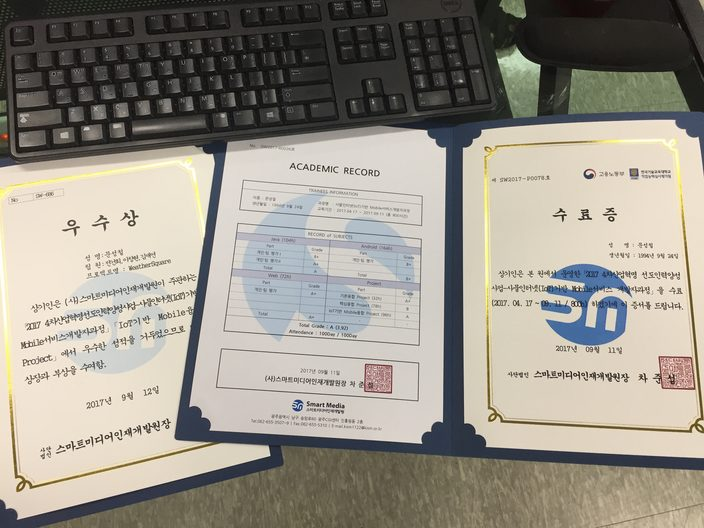

4차 산업혁명 시대에 도래하여 필요한 사물인터넷에 대한 기초적인 기반을 잡을 수 있는 프로그램이 었다.
코딩에 대해서 무지하더라도 컴퓨터에 관한 관심과 노력만 있다면 모든 학생들이 수료할 수 있다고 생각한다.
프로그래밍에 대해서 뒤 떨어지더라도 멘토 멘티로 이루어진 팀을 통해 서로 도우며 프로그래밍에 대한 여러가지 접근법을 맛볼 수 있다.
다른 프로그램과 다른 점은 정보를 배우는 것만으로 한정된 프로그램이 아닌 능동적인 행동이 필요로 하여 배운 지식을 활용할 수 있는
기회를 얻을 수 있다. 이러한 과정을 모두 수료한 후에는 각자의 능력에 맞춰진 취업 연계로 모든 학생들이 취업 가능하게 된다.